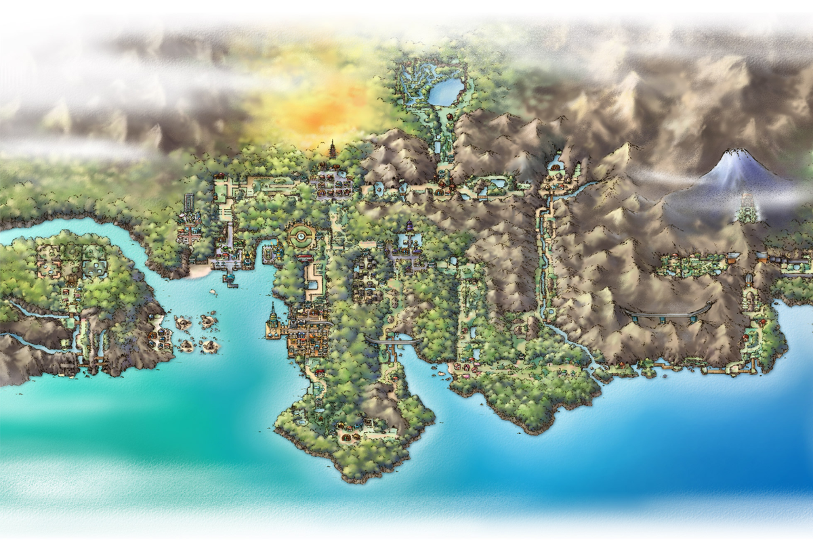

PokeWiki
Bienvenido a PokeWiki, esta es una enciclopedia digital dedicada al universo Pokémon, creada con el propósito de reunir, organizar y compartir de manera clara y accesible toda la información relacionada con este vasto mundo. En ella, los usuarios pueden explorar datos sobre especies Pokémon, regiones, entrenadores, objetos, movimientos y eventos que han marcado la historia de la franquicia.
Regiones
Existen 9 regiones principales en los videojuegos de Pokémon
Kanto

Generación: I
Juegos: Rojo, Azul, Verde, Amarillo
Kanto es la región que dio inicio a la franquicia. Inspirada en la prefectura de Kantō en Japón, combina ciudades pequeñas con rutas naturales y montañas. Es famosa por ser donde los entrenadores inician su aventura y capturan a los Pokémon originales como Pikachu, Charmander, Bulbasaur y Squirtle. Además, Kanto introdujo los 151 Pokémon originales y sentó las bases de la mecánica de gimnasios, batallas y evolución.
Pokémon destacados: Pikachu, Charmander, Bulbasaur, Squirtle, Mewtwo.
Johto
Generación: II
Juegos: Oro, Plata, Cristal
Inspirada en Hawaii, Alola es tropical, soleada y está compuesta por varias islas. Introdujo las formas regionales de Alola, que son variaciones de Pokémon de Kanto adaptadas al clima y cultura local. La región se centra en la vida relajada y la exploración de islas, reemplazando los gimnasios tradicionales por el “Tour Insular”, donde los entrenadores enfrentan retos únicos y guardianes legendarios.
Pokémon destacados: Cyndaquil, Totodile, Chikorita, Lugia, Ho-Oh.
Hoenn

Generación: III
Juegos: Rubí, Zafiro, Esmeralda
Inspirada en Kyushu, Hoenn destaca por su diversidad natural: desde desiertos y volcanes hasta extensos océanos y selvas tropicales. Introdujo mecánicas como habilidades y batallas dobles. La exploración de Hoenn tiene un fuerte componente acuático, con rutas navegables y Pokémon exclusivos de agua. La región también es famosa por sus líderes de gimnasio y la historia centrada en el clima y los legendarios Groudon y Kyogre
Pokémon destacados: Torchic, Mudkip, Treecko, Groudon, Kyogre.
Sinnoh

Generación: IV
Juegos: Diamante, Perla, Platino
Basada en Hokkaido, Sinnoh combina montañas nevadas, lagos cristalinos y ciudades modernas con toques tradicionales. Introdujo nuevas formas de evolución, como la amistad y la evolución por piedra, y presentó a los legendarios que representan la creación del universo Pokémon: Dialga, Palkia y Giratina. La historia de Sinnoh es más profunda, explorando temas de origen y balance del mundo Pokémon.
Pokémon destacados: Turtwig, Chimchar, Piplup, Dialga, Palkia, Giratina.
Unova o Teselia

Generación: V
Juegos: Negro, Blanco, Negro 2, Blanco 2
Inspirada en Nueva York, Unova es la primera región completamente nueva en la serie, con un diseño urbano y cosmopolita. Introdujo únicamente Pokémon nuevos en su primera generación, destacando por su diversidad de biomas: desde ciudades modernas hasta desiertos, bosques y zonas nevadas. La historia de Unova se centra en los ideales, la moralidad y los equipos villanos que buscan controlar a los Pokémon legendarios.
Pokémon destacados: Snivy, Tepig, Oshawott, Reshiram, Zekrom.
Kalos

Generación: VI
Juegos: X y Y
Basada en Francia, Kalos se caracteriza por su elegancia, moda y arquitectura europea. Introdujo las Mega Evoluciones, un sistema que permite a ciertos Pokémon alcanzar un poder temporal superior en batalla. Kalos también destacó por la interacción con concursos y competencias de belleza Pokémon, además de ofrecer rutas panorámicas, ciudades con inspiración parisina y Pokémon que reflejan cultura y estilo europeo.
Pokémon destacados: Chespin, Fennekin, Froakie, Xerneas, Yveltal.
Alola

Generación: VII
Juegos: Sol y Luna, Ultrasol y Ultraluna
Inspirada en Hawaii, Alola es tropical, soleada y está compuesta por varias islas. Introdujo las formas regionales de Alola, que son variaciones de Pokémon de Kanto adaptadas al clima y cultura local. La región se centra en la vida relajada y la exploración de islas, reemplazando los gimnasios tradicionales por el “Tour Insular”, donde los entrenadores enfrentan retos únicos y guardianes legendarios.
Pokémon destacados: Rowlet, Litten, Popplio, Solgaleo, Lunala.
Galar

Generación: VIII
Juegos: Espada y Escudo
Basada en Reino Unido, Galar combina zonas industriales, pueblos rurales y paisajes naturales. Introdujo las mecánicas de Dinamax y Gigamax, donde los Pokémon pueden crecer enormemente en tamaño y poder durante batallas. La región enfatiza la cultura deportiva, con estadios espectaculares, ligas Pokémon competitivas y un fuerte enfoque en entrenadores y torneos.
Pokémon destacados: Grookey, Scorbunny, Sobble, Zacian, Zamacenta.
Paldea

Generación: IX
Juegos: Escarlata y Púrpura
Inspirada en la Península Ibérica, Paldea es una región abierta y expansiva, pensada para la exploración libre. Introdujo la mecánica de Pokémon Teracristalizados, que transforma a los Pokémon temporalmente durante el combate. Paldea mezcla ciudades modernas con campos y paisajes variados, fomentando aventuras personalizadas, desafíos libres y descubrimiento constante de Pokémon nuevos y legendarios.
Pokémon destacados: Sprigatito, Fuecoco, Quaxly, Koraidon, Miraidon.
Entrenadores
Ranking Pokémon mas famosos

Aunque existen más de 1,000 especies de Pokémon, algunos se han destacado por su carisma, poder, diseño o papel en la historia de la saga, convirtiéndose en auténticos íconos culturales. En esta lista, exploraremos a los Pokémon más famosos:
- Pikachu (El más famoso por ser el ícono de la franquicia y compañero de Ash en la serie).
- Charizard (Famoso por su apariencia y su poder en batalla).
- Mewtwo (Es conocido por ser uno de los Pokémon legendarios más poderosos y por ser el antagonista en la primera película).
- Eeve (Famoso por sus multiples evoluciones y su diseño tierno).
- Gengar (Uno de los Pokémon más emblemáticos del tipo fantasma introducido en la primera generación).
- Lucario (Conocido por su diseño y su papel en el anime, es un favorito de generaciones más recientes).
Curiosidades

Aquí encontrarás las mejores curiosidades sobre Pokémon:
- El número 000 en la Pokédex pertenece a MissingNo, un famoso error del juego original.
- Hasta la fecha, existen más de 1,000 especies de Pokémon registradas oficialmente.
- Pikachu no iba a ser la mascota oficial de Pokémon. En los primeros diseños, el elegido era Clefairy.
- El primer Pokémon diseñado no fue Bulbasaur, sino Rhydon.
- Cubone lleva el cráneo de su madre fallecida; uno de los detalles más oscuros del universo Pokémon.
- En la primera generación existían solo 15 tipos de Pokémon (ahora hay 19).
- El Pokémon más alto conocido es Eternatus (20 metros de altura).
- El más pequeño es Flabébé, que mide solo 10 centímetros.
- El único Pokémon capaz de usar todos los movimientos es Smeargle, gracias a su técnica “Esquema”.
- Un episodio de Pokémon fue censurado tras provocar que 685 niños en Japón sufrieran convulsiones por destellos de luz, y nunca volvió a emitirse.